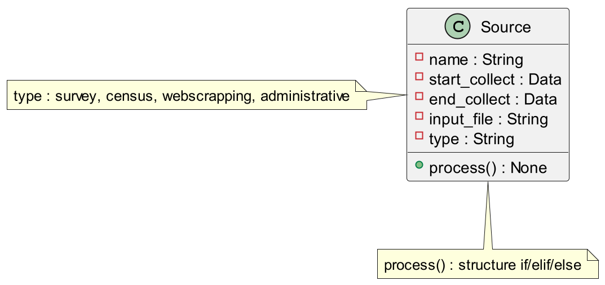
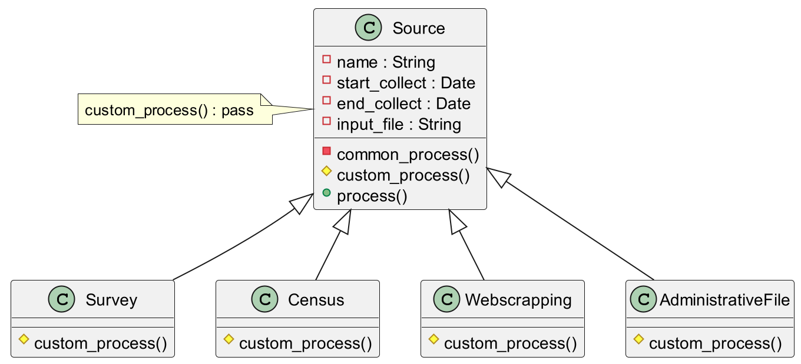
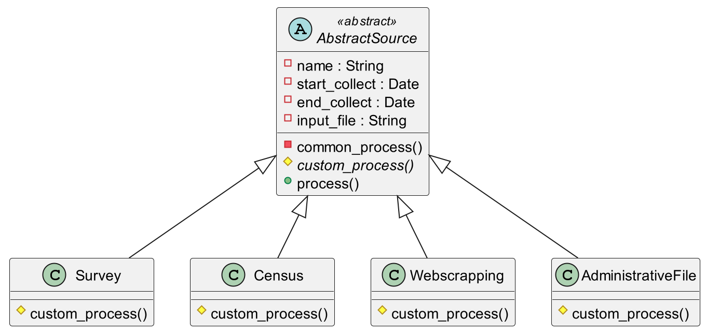
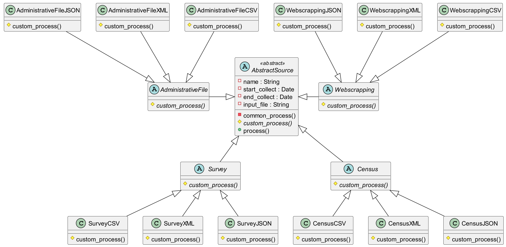
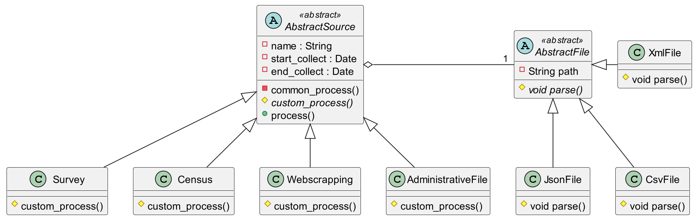
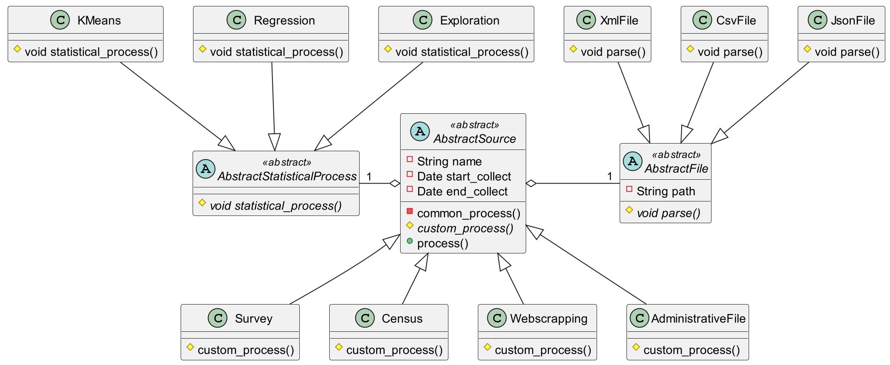

Compléments d'info, CM1
Retour sur la POO
DENEUVILLE Ludovic (sur la base des cours de Rémi Pépin)
ludovic.deneuville@ensai.fr
Introduction
Le projet info
- De Septembre à mi-Décembre
- Développer une application
- 2 phases : Analyse puis Développement
Les TP
ils vont vous aider pour le projetÉvaluation
- Mardi 24 octobre
- 2h
- sur papier
- 1 feuille A4 recto/verso manuscrite
Généralités
But du cours
Vous apporter les connaissances nécessaires pour mener à bien un projet informatique.
- Comprendre les développeurs
- Dépasser les 50 lignes de code
- Conduire un projet
- Travailler en équipe
Retour sur la 1A
Qu'avez vous appris ?Le programme
- Analyse fonctionnelle, génie logiciel
- Programmation orientée objet avancée
- Communication avec une base de données en python
- Sécurité informatique
- Communication client-serveur
- Le versionnage avec git
Le plan d'aujourd'hui
- L'analyse fonctionnelle
- Définition
- Diagrammes UML
- L'architecture logiciel
- Définition
- Séparation des responsabilités
- Notions avancées de POO
- Rappels
- Classes abstraites
- Bridge pattern
- Génie logiciel
- Définition
- Single responsibility principle
- Design patterns
Analyse fonctionnelle
C'est quoi l'analyse fonctionnelle ?
- Première étape de tous les projets
- Détermine les fonctions, acteurs du produit pour répondre aux besoins du client
- Diagrammes pour échanger avec le client
- Priorise les travaux
Les questions à se poser
- Quels sont les types d'utilisateurs qui vont utiliser mon application (administrateur, gestionnaire, client, etc.) ?
- Quelles sont les fonctionnalités ? Fonctionnalités communes entre les profils ?
- Comment fonctionnent les processus de l'application ?
- Quels sont les diagrammes à utiliser ?
Les diagrammes UML
- Cours de 1A
- UML 2.5, Pascal Roques, Eyrolles, Mémento (bibliothèque Ensai)
Architecture logicielle

C'est quoi l'architecture logicielle?
- Le pendant technique de l'analyse fonctionnelle
- Maintenant que l'on a le qui et quoi, on détermine le comment
- On dessine le code de notre application
- Vision macro de notre application (agencement des grandes pièces)
Pourquoi c'est important : parallèle avec l'architecture

Pourquoi c'est important : parallèle avec l'architecture
- Pièces, l'installation électrique, l'eau, le gaz, contraintes législatives, s'adapter au terrain ...
- Besoin de réfléchir comment il faut agencer tout ça dès le début
- Si on construit au fil de l'eau on risque d'avoir une maison incohérente (au mieux)
- Ce n'est pas du temps perdu !
Un grand principe : separation of concerns
Un grand principe : separation of concerns

Les principales couches d'une application
- Présentation : tout ce qui se charge de l'affichage (page web, console, fenêtre)
- Métier : c'est le métier de votre application, sa plus-value
- Persistance : gère la persistance des données. Base de données ou système de fichiers
Pour votre projet
- Présentation : terminal
- Métier : votre code python
- Persistance : base de données
Zoom sur la couche métier

Les couches de la couche métier 1/2
- DAO (Data access object) :
- c'est la partie de votre code qui communique avec la base de données (CM3/TP3)
- Service :
- code métier
- manipule des objets métiers pour créer de l'information ou de la valeur
- Demande des objets à la couche DAO
- Appelle les webservices externes (TP2-3)
Les couches de la couche métier 2/2
- Objets métiers :
- couche transversale
- représentent des concepts métiers que votre code va manipuler
- objets avec surtout des attributs et peu de méthodes
- Contrôleur :
- récupère les inputs des utilisateurs
- renvoie les données à afficher (TP 4)
Pourquoi séparer en couche ?
- Travail en groupe 🦸♀️🧙♂️👨💼👩🔬
- Lisibilité du code 📖
- Débogages 🐞
Limiter les risques d'erreurs quand on modifie le code (éviter
l'assiette de spaghetti) 🍝
Informations à retenir
- Passer du temps à réfléchir aux différents modules d'une application n'est pas une perte de temps 🕵️♀️
- Diviser en couche permet de travailler en parallèle 🧪🧫📚
- Mais il faut encore réfléchir à comment bien coder 🤖
Programmation orientée objet avancée

Quelques rappels
Les trois principes de l'objet :- Encapsulation : un objet va contenir des attributs et des méthodes
- Héritage : un objet peut hériter des attributs et méthodes d'une autre classe pour les redéfinir. Il va pouvoir également ajouter d'autres attributs/méthodes
- Polymorphisme : une méthode peut être associée à un code différent en fonction des paramètres passés ou de l'objet à qui elle appartient
Un exemple pour illustrer tous ça
Application de traitements automatiques des données :- Plusieurs sources de données : enquêtes, webscrapping, fichiers administratifs, ...
- Plusieurs formats de données : csv, xml, json, ... (on en reparlera)
- Plusieurs algo de traitements : stat exploratoire, régression, "machine learning", ...
Exemple de diagramme de classe
Un exemple avec de l'héritage
Les classes abstraites
Classe Abstraite : classe dont
l'implémentation n'est pas
complète et qui n'est pas instantiable. Permet de
passer un contrat,
les classes filles vont devoir implémenter ce qui manque.
Avantages :
- On sait ce que toutes les classes filles doivent faire 👍
- On peut générer du code 🙏
- Limitent le risque d'erreur !! 👌
Par exemple
Et en python ?
- Pas de gestion native des classes abstraites 😱
- Module Abstract Base Classes (abc) pour résoudre le problème 🦾
- Déjà inclus dans votre distribution python 😌
- Step 1 - Importer le module 🧳
- Step 2 - Hériter de ABC 👨👩👧👦
- Step 3 - Définir les méthodes abstraites 📝
- Step 4 - ???
- Step 5 - Profit 💰💰
Et si on ajoutait les formats de données ?
Actuellement 3 formats de données dans notre application :
- CSV : Comma Separated Values (tabulaire)
- XML : eXtended Markup Language (format à balise)
- Json : JavaScript Object Notation (format clef-valeur)
Par exemple
Voyez-vous un problème ?
La puissance de la POO
- Actuellement 4 * 3 classes "concrètes" à définir 😱
- La lecture du format est dépendante de la source 😵
MAIS 🌽
- On peut externaliser ce traitement ! 😌
- Relation d'agrégation 🤯
Le bridge pattern
Work smart, not hard
- Composition + héritage : 9 classes 😎
- Héritage : 17 classes 😫
- On peut facilement ajouter des types et des formats 🥳
Pattern Bridge 🌉 : découpage d'une grosse
classe en un groupe de petites classes avec leur propre hiérarchie qu'il faut
ensuite assembler.
Pour résumer
- Utiliser la puissance de la POO 💣
- Préférer les objets spécifiques (héritage) au if/elif/else 🐱🏍
- Les classes abstraites sont des plans pour les futures classes 👷♀️👷♂️
- La POO permet de créer des codes plus lisibles, évolutifs et maintenables 👑
Le génie logiciel
C'est quoi le génie logiciel ?
- Un constat : coder bêtement ne permet pas de faire une application de qualité
- Mais empiler des briques bêtement ne permet pas de faire une maison même si on a un plan
- Besoin de planifier, de documenter, de tester, etc.
Pourquoi c'est important : parallèle la construction d'une maison

Pourquoi c'est important : parallèle avec la construction d'une maison
- Vous avez le plan de construction d'une maison (fournis par l'architecte)
- Mais implémenter ce plan demande des connaissances techniques
- Besoin de refaire des schémas pour des zones précises (arches, escaliers ...)
- Ce n'est pas du temps perdu !
Faire du code de qualité c'est comme faire de l'artisanat de précision, cela demande outils, expérience et méthodes.
Quelques principes de base
- Décomposition d'un programme en modules simples cohérents
- Les modules exposent des méthodes utilisables / surchargeable par d'autres modules mais restent protégés aux modifications non prévues
- Chaque module doit être une boîte noire pour les autres
- Si on garde les mêmes entrées/sorties on peut changer un module sans risque
- Privilégier abstractions + héritage que if/elif/else
Un mantra
Faible couplage, forte cohérence
- Faible couplage inter-classes : modifier une classe doit impacter les autres le moins possible
- Forte cohérence intra-classe : chaque classe doit être un ensemble cohérent d'attributs et méthodes
Faible couplage, forte cohérence : pourquoi le respecter ?
- Travail en groupe 🦸♀️🧙♂️👨💼👩🔬
- Lisibilité du code 📖
- Débogages 🐞
Limiter les risques d'erreur quand on modifie le code (éviter
l'assiette de spaghetti) 🍝
Retour sur le bridge pattern
Retour sur le bridge pattern
- La partie "Source" gère les traitements liés à la source
- La partie "Fichier" gère la lecture de fichier
- Seules les entrées/sorties comptent
- On peut ajouter une partie "Traitement" pour des traitements supplémentaires
- Pas de if/elif/else inutiles
Chaque partie de notre code s'occupe d'une seule chose
Les design patterns : histoire
- 1994 : Design Patterns – Elements of Reusable Object-Oriented Software du Gang of Four
- 23 patrons au début
- Aujourd'hui environ 40

Les design patterns : définition
“En informatique, et plus particulièrement en développement logiciel, un patron de conception (souvent appelé design pattern) est un arrangement caractéristique de modules, reconnu comme bonne pratique en réponse à un problème de conception d'un logiciel. Il décrit une solution standard, utilisable dans la conception de différents logiciels.”
Les design patterns : in a nutshell
- Bonnes pratiques
- Solutions standards à des problèmes de conception
- Solutions robustes
- Indépendants de la technologie
- Indépendants du métier
Est un outil qui est là pour vous aider
Les design patterns : exemple
Problème récurent :
- Créer des objets complexes qui sont une composition de caractéristiques indépendantes
- Dit autrement : découpler l'abstraction de son implémentation pour qu'elles puissent varier indépendamment
Les design patterns : exemple

C'est la forme "pure" du bridge pattern
Les design patterns : exemple
Les design patterns : exemple
Pour résumer
- Faire une application complexe demande un code complexe 🧩
- Sans phase de conception on va dans le mur 🧱
- Il existe des solutions prêtes à l'emploi à des problèmes courants 🧰
Faible couplage, forte cohérence
Les design patterns : ressources utiles
- Design patterns : catalogue de modèles de conception réutilisables / Erich Gamma ; Richard Helm, ; Ralph Johnson ; John Vlissides ; Jean-Marie Lasvergères
- Refactoring guru
- Python Patters github
- Chaîne YT ArjanCodes
That's all folks